Deployment Overview
WatchGuard provides integration instructions to help our customers configure WatchGuard products to work with products created by other organizations. If you need more information or technical support about how to configure a third-party product, see the documentation and support resources for that product.
This integration guide describes how to configure a Branch Office VPN (BOVPN) between a WatchGuard Firebox and a Check Point device.
Integration Summary
The hardware and software used in this guide include:
- WatchGuard Firebox with Fireware v12.6.4
- Check Point 770 with vR77.20.87(990173072)
Test Topology
This diagram shows the topology for a BOVPN connection between a Firebox and a Check Point device.
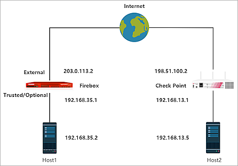
Configure the Firebox
On the Firebox, configure a Branch Office VPN (BOVPN) connection:
- Log in to Fireware Web UI.
- Select VPN > Branch Office VPN.
The Branch Office VPN configuration page appears. - In the Gateways section, click Add.
The Gateway Endpoint Settings dialog box appears. - In the Gateway Name text box, type a name to identify this Branch Office VPN gateway.
- From the Address Family drop-down list, select IPv4 Addresses.
- In the Credential Method section, select Use Pre-Shared Key.
- In the adjacent text box, type the pre-shared key.
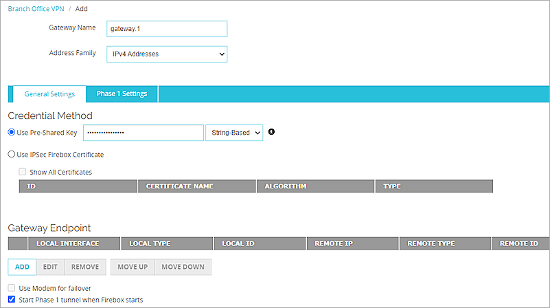
- In the Gateway Endpoint section, click Add.
The Gateway Endpoint Settings dialog box appears. - From the External Interface drop-down list, select External.
- From the Interface IP Address drop-down list, select Primary Interface IP Address.
The Primary Interface IP Address is the primary IP address you configured on the selected external interface. - Select By IP Address.
- In adjacent text box, type the primary IP address of the External Firebox interface.
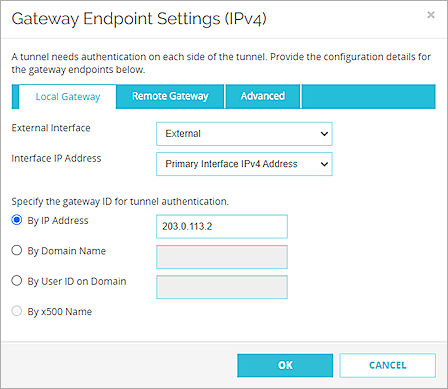
- Select the Remote Gateway tab.
- Select Static IP Address.
- In the adjacent text box, type the public IP address of your Check Point connection.
- Select By IP Address.
- In the adjacent text box, type the public IP address of your Check Point connection.
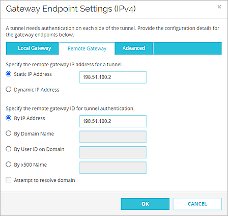
- Click OK.
- In the Gateway Endpoint section, select the Start Phase 1 tunnel when Firebox starts check box.

- Select the Phase 1 Settings tab.
- From the Version drop-down list, select IKEv2.
- For all other Phase 1 settings, keep the default values.
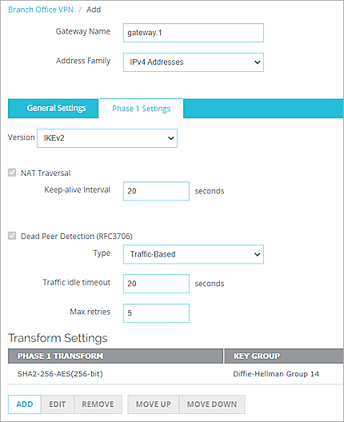
- Click Save.
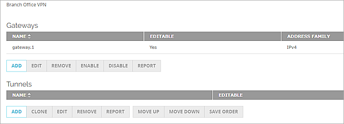
- In the Tunnels section, click Add.
The Branch Office VPN Tunnel configuration interface appears. - From the Gateway drop-down list, select the gateway that you added.
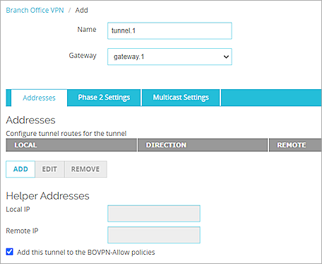
- In the Addresses section, click Add.
- In the Local IP section, from the Choose Type drop-down list, select Network IPv4.
- In the Network IP text box, type the local IP segment. This is the local network protected by the Firebox.
- In the Remote IP section, from the Choose Type drop-down list, select Network IPv4.
- In the Network IP text box, type the remote IP segment. This is the local network protected by the Check Point device.
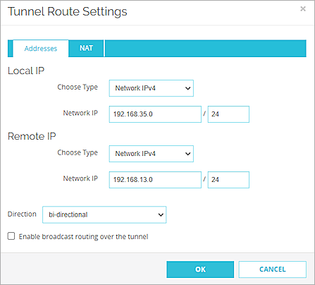
- Click OK.
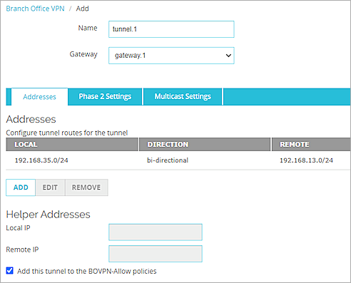
- Keep the default values for all of the Phase 2 Settings.
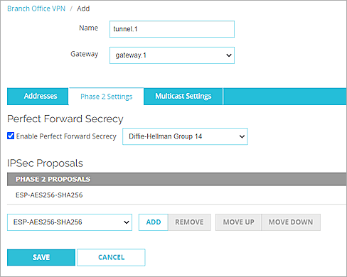
- Click Save.
For more information about Branch Office VPN configuration on the Firebox, see Configure Manual BOVPN Gateways and Configure Manual BOVPN Tunnels.
Configure the Check Point Device
To configure the Check Point device, you must specify several settings.
- Log in to the Check Point 770 Web UI. The default IP address and port is https://192.168.1.1:4434.
- From the navigation menu, select Users & Objects > Network Resources > Network Objects.
- Click New.
- From the Type drop-down list, select Network.
- In the Network address text box, type the Network IP address, which is the internal network IP address protected by the WatchGuard Firebox.
- In the Subnet mask text box, type the subnet mask.
- In the Object name text box, type the object name.
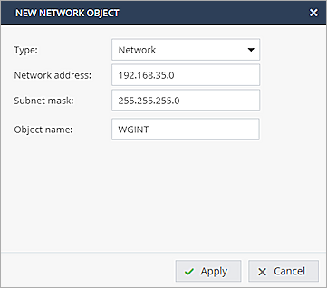
- Click Apply.
- Repeat Steps 3–8 to create another network Object, which is the internal Network IP address protected by the Check Point device.
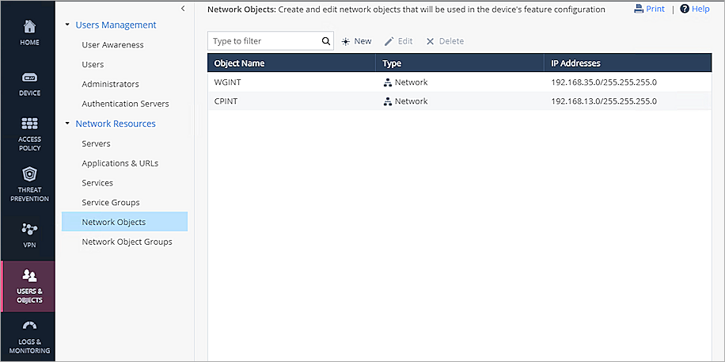
Next, configure the VPN Site:
- From the navigation menu, select VPN > Site to Site > VPN Sites.
- Click New to add new VPN site.
The New VPN Site window appears. - On the Remote Site tab, in the Site name text box, type the site name.
- From the Connection type drop-down list, select Host name or IP address.
- Select IP address and type the public IP address of remote device in text box.
- In the Authentication section, select Pre-shared secret.
- In the Password and Confirm text boxes, type the password.
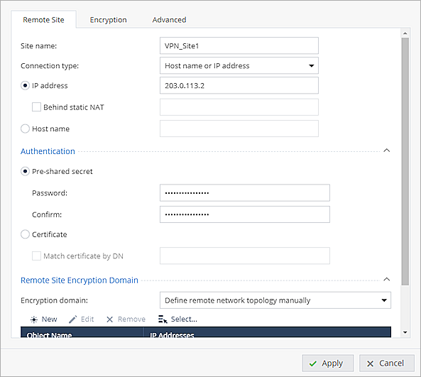
- From the Encryption domain drop-down list, select Define remote network topology manually.
- Click Select and select the WGINT object that you created.
- Click Apply.
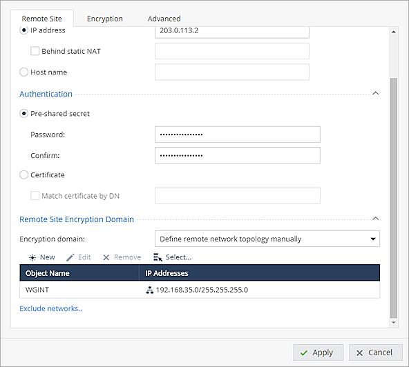
- Select the Encryption tab.
- From the Encryption settings drop-down list, select Custom.
- In the IKE (Phase 1) section, from the Encryption drop-down list, select AES-256.
- From the Authentication drop-down list, select SHA256.
- From the Diffie-Hellman group support drop-down list, select Group 14 (2048 bit).
- In the IPSec （Phase 2）section, from the Encryption drop-down list, select AES-256.
- From the Authentication drop-down list, select SHA256.
- Select the Enable Perfect Forward Secrecy check box.
- From the Diffie-Hellman group support drop-down list, select Group 14 (2048 bit).
- Keep the default settings for all other options.
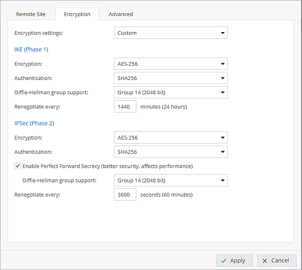
- Select the Advanced tab.
- Clear the Remote gateway is a Check Point Security Gateway check box.
- Select the Allow traffic to the internet from remote site through this gateway check box.
- From the Encryption method drop-down list, select IKEv2.
- For all other settings, keep the default values.
- Click Apply.
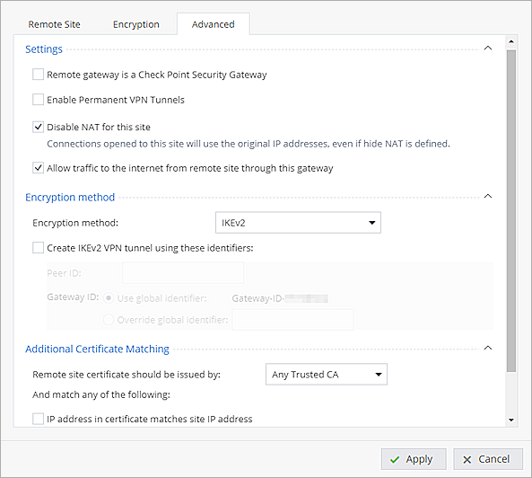
Next, configure the Access Policy:
- From the navigation menu, select Access Policy > Firewall > Policy.
- In the Incoming, Internal and VPN traffic section, click New.
- For the Source, select the CPINT object that you created.
- For the Destination, select the WGINT object that you created.
- Keep the default settings for all other options.
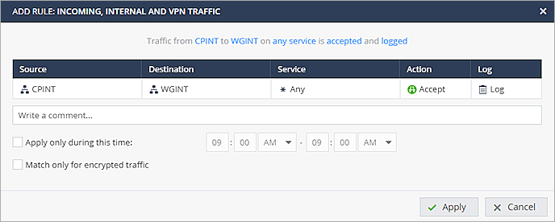
- Click Apply.
- Repeat Steps 2-6 to create another policy.
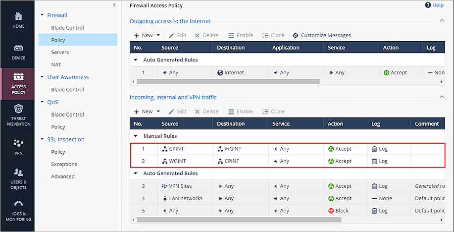
For more information about Check Point VPN configuration and supported IKE ciphers, see Check Point 700/900 Appliances R77.20.87 Administration Guide.
Test the Integration
To test the integration, from Fireware Web UI:
- Select System Status > VPN Statistics.
- Select the Branch Office VPN tab.
- Verify that the VPN is established.
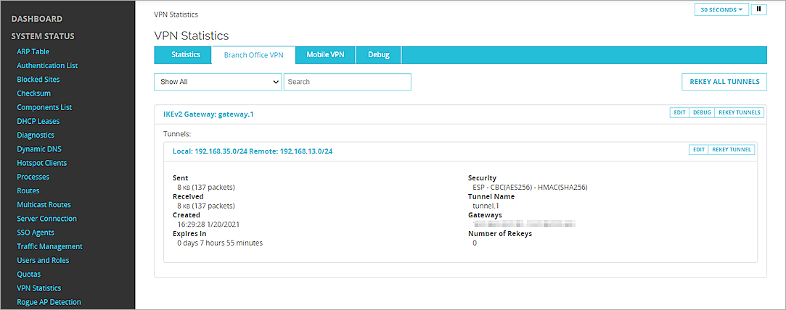
- Verify that Host 1 (behind the Firebox) and Host 2 (behind the Check Point device) can ping each other.